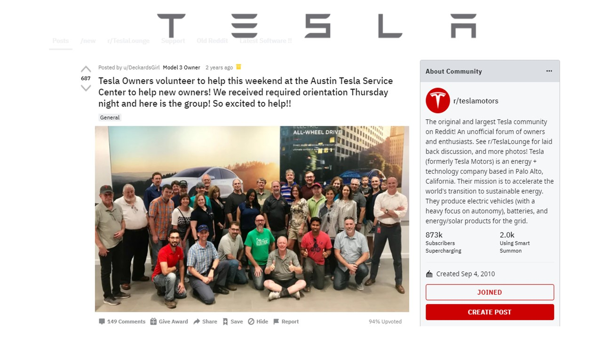
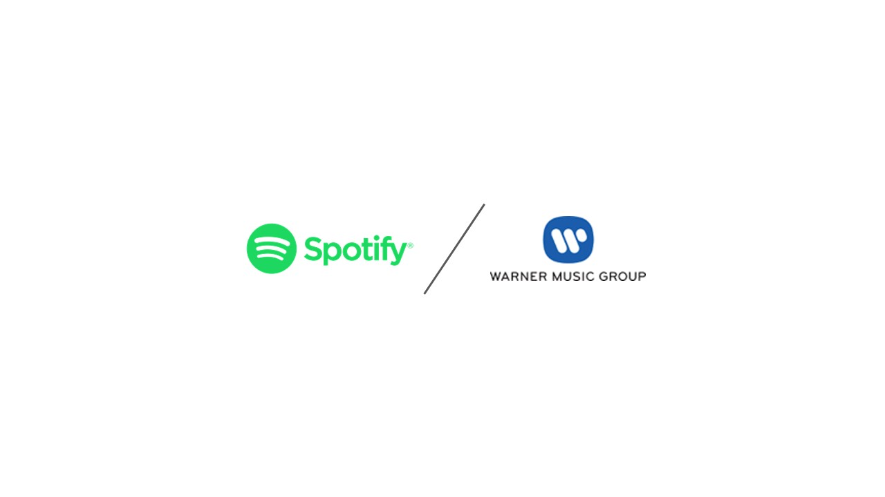
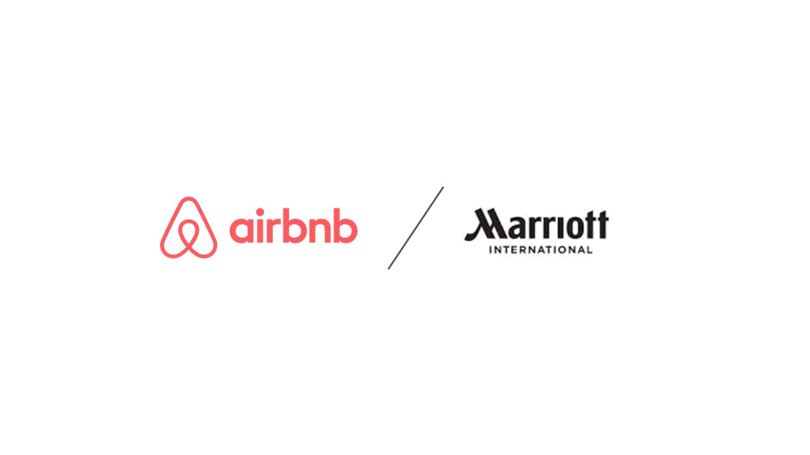
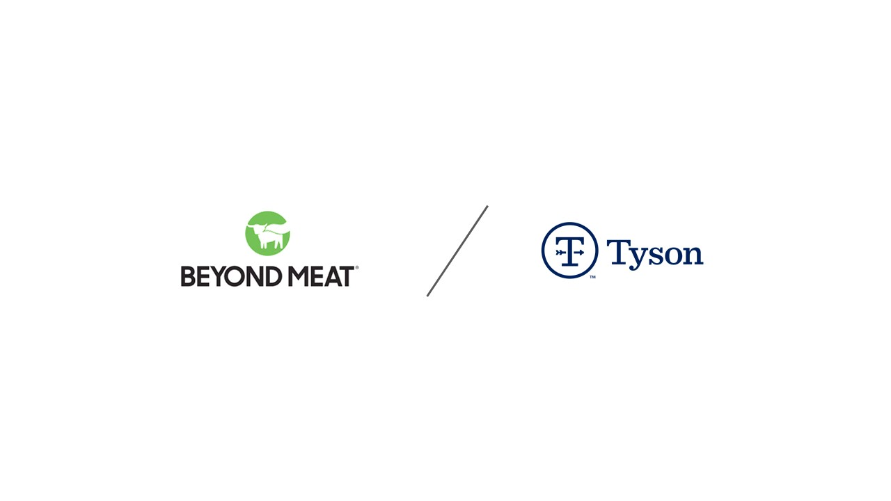

The author of all content including the post content, investment thesis and models are made by one anonymous young investment professional. Anonymity is key as all thoughts and views expressed are unconflicted and completely my own.
I started down this rabbit hole in March of 2016, on my 18th birthday. My parents thought I would lose all my money and wouldn’t open an Joint Account with me, so I had to wait until I could do it on my own. Well my birthday came around and with $2,500 I saved from working at restaurants in High School, I dove head in with an E*Trade Account. I chose E*Trade over Robinhood because they had a built out customer support network and at the time, I didn’t like how Robhinhood front ran their customer orders to hedge Funds. Sure, I paid $10 each time I bought and sold shares unlike some of my peers, but looking back I’m glad I wasn’t (still aren’t) a part of the Robhinhood crew. I think it speaks to my longevity and interest in markets itself.
I had never been interested in short term thinking within markets. I saw tickers as companies rather than symbols and charts. Businesses as opposed to assets. An asset is a 142MW Solar Farm Blackstone acquires, a business is a management team fighting for market share, winning the hearts and minds of the consumers who purchase their products. For that reason, I invested in only what I knew (the household names) for the first few years of my career: Alcoa, Apple, Amazon and an exciting company called Tesla.
During college I put most of my scholarship earnings into the markets. The train of thought was that I earned these with my own merit and should try and make some money off that. Probably one of the wisest things I’ve done in my early career as it’s truly set the foundation for the growth I’ve been able to realize so far.
Another pivotal event happened for me in college: Winter Break. I had four weeks alone in a brand-new apartment that I decided to move into early. I spent those four weeks on building this very website and the premise of my Mana Thesis as well as my 2019 annual report. I’ll never ever forget my time on Highland Drive. I had dumped the last of my savings into the market during the Winter of 2019. There were a lot of deals during that time and I couldn’t pass them up – I specifically remember having to split hairs budgeting and live off $50 a week during my last few months in college. Great times, good times but times that are gone now and can’t ever come back, thankfully.
I’ve spent the last year now flushing out what I like to call my Mana thesis, which I’ll get into below. The Coronavirus shutdowns began and I was fortunate enough to be able to spend most of my time before my full-time job started, looking at companies I wanted to invest in.
• ma·na : /ˈmänə/ - (especially in Polynesian, Melanesian, and Maori belief) pervasive supernatural or magical power
Example: You might, for example, say, "The doughnuts my coworker brought in this morning were like manna from heaven."
Interestingly enough, software both on an enterprise and consumer level have ripped through our lives in a way that a god-sent gift would. Many don’t notice this, but the products you buy – represent who you are. Globally, corporations have tugged on the heart strings of the very consumers they serve, as hours worked get longer and people consume more content digitally. Example one: Spotify versus Apple Music users, at a first glance it doesn’t seem like much but these are cult-like followed subscriptions that take being dangled off a rooftop to covert from. Don’t even get me started with the iPhone / Android or Xbox / PlayStation debate.
The essence of “Mana” is capturing that cult-like feeling consumers have towards the businesses they love. Trust me, companies understand this and the ones who captivate on this are typically rewarded with premium multiples. It would be very interesting to do an analysis of companies with the highest Net Promoter Score and their EV / EBITDA multiples to see if there is any correlation between the two.
At the end of the day, if you’re obsessed with your customer’s experience, your customers will become obsessed with you. Example: During Tesla’s Model 3 production hell, all available employees were called to the production line to get Model 3’s into their customer’s hands. One Twitter user called out to Elon stating that he’d be willing to help orient new Model 3 owners, for free once their cars were ready. The below image is the result of that.
I have no interest in buying companies that produce the widgets that go into making my faucet or a candle holder. Leave those to the private equity buy-out folks who look for GDP-like growth rates and want to pursue bolt on M&A for multiple expansion. Innovation comes in many forms, it may be alternative meat, autonomous electric vehicles, space exploration. Whatever it is, it must be a growing industry that leverages technology as a tool.
I don’t look to invest in picks and shovels plays. I want businesses that are consumer facing and own the relationship with the end customer. For instance, I would never buy Boeing Shares if I wanted exposure to the airline / travel industry despite the fact that Boeing supply’s nearly every airliner, I’d rather own United / Southwest. Or for exposure to autonomous vehicles, I wouldn’t want to own Nvidia, but rather Waymo, or Aurora – neither of which are public. Or exposure to music streaming: I’m buying Spotify all day over Warner Music Group – although streaming is complicated….very complicated.
Competition is for losers. Category definers certainly don’t need to be first in the market, but their products need to be so good that they sit in a category of their own. Example: Yahoo was founded in 1994, Microsoft’s Internet Explorer, 1995 and Google: 1998. Google distanced themselves by focusing on search and becoming the best at it. Yet this is a balancing act, one shouldn’t define the category so narrowly that by default you own it, but rather who’s replacing the incumbents and widening the TAM.
This flows through all of the above, but if the founding team isn’t excited about the company, or inspires the case is hard to make for the direction of the company. I typically try to stay away from businesses with a professional CEO as opposed to the founder unless they’re spectacular. One who won’t get short sighted through share buybacks as opposed to investing in R&D.
Younger, freshly public companies have shinier prospects in front of them as opposed to their older incumbent counterparts. Management is charged up, shareholders are excited and the company has blank slate, as opposed to an incumbent who’s looking to reposition themselves to fit “X’s” market share they’re losing….But Age is Just a Number ;)
Too often both institutional and retail investors are too short sighted when they invest in public markets. I’ve been able to storm extreme volatility because I know that fundamentally, the companies that I’m investing in are great businesses. The premise of valuation is that you don’t realize the value of a companies cash flows until 3 – 5 years into the future. Some people look to make exits in months! Not to mention the tax implications.. I never was one to try and throw darts at a board and “yolo” although that’s what’s popular nowadays. In markets, time is on your side.